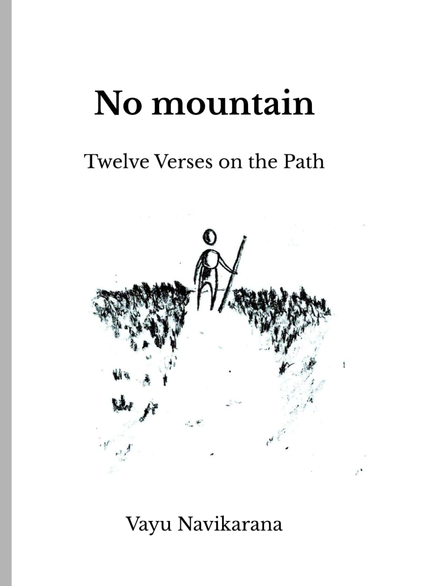

The Diamond Sutra
A Spanish translation based on the Chinese text associated with Kumārajīva, attentive to the sutra’s direct language and productive ambiguities.
Spanish
Book project · Editorial work ongoing View work ↗A writing and translation portfolio
A selection of translations, essays, and creative work around Buddhist texts, classical literature, and the questions that arise from reading across languages.
A selection across translation, reflection, and literary practice. Each work is presented with its context and status.
A Spanish translation based on the Chinese text associated with Kumārajīva, attentive to the sutra’s direct language and productive ambiguities.
Spanish
Book project · Editorial work ongoing View work ↗A translation and close reading of a short poem by Jia Dao, exploring how a few lines can hold the labor and uncertainty of writing.
Spanish
Translation · Revision possible View work ↗An English translation and study of the Confucian classic 大學, published alongside a separate essay on the process of translation.
English
TranslationAn essay on translating a classical Chinese text, developed from work in the DRBU Translation Certificate Program and presented at the Spring 2026 Student Symposium.
English
EssayA reflection on the choices involved in translating poetic form, sound, and meaning across languages.
English only
Blog essay View work ↗A bilingual introduction to a word whose meanings shift across Buddhist teaching, practice, and ordinary use.
English · Spanish
Bilingual essay View work ↗Alongside translation, this work explores how inherited ideas meet contemporary life through essays, poetry, and imaginative writing.

An illustrated poetic work inspired by the ancient Oxherding Pictures and Kakuan’s verses. A contemporary traveller’s mountain journey unfolds through twelve verses, illustrations, and brief commentaries.
English · Spanish
Published · Two editionsA collection of short, playful literary works that explore Buddhist ideas through everyday experiences, from coffee and chocolate to pizza and chilaquiles. These are contemporary creative works, not historical or canonical sutras.
Spanish · English
Literary collectionSome projects take the form of books, sustained translation work, or experiments that need room to develop before they are ready to be shared in full.
A collection pairing accessible abridgments with fuller versions of Buddhist discourses, with attention to sources and editorial choices.
Book projectView work ↗A Spanish translation project engaging with the Chinese commentary tradition surrounding the Diamond Sutra.
Spanish
In progressView work ↗A Buddhist-inspired story shaped by the Mesoamerican path of the dead, memory, and the difficult crossing toward another shore.
Spanish
Fiction projectView work ↗Vayu Navikarana is a Buddhist student and translator working with Buddhist texts and classical Chinese literature. The work moves between translation, close reading, essays, and creative writing.
Vayu completed a Buddhist Text Translation certificate at Dharma Realm Buddhist University and is currently pursuing a master’s degree in Buddhist Classics there. This short biography focuses on study and work; details of personal practice and community affiliation are kept private.
The site brings together selected work rather than a complete archive. Some pieces are available in English, some in Spanish, and a few in both. Each entry identifies the language or languages currently available.
This site is a selected portfolio, not a complete archive. Work in progress is labeled as such; translations and adaptations are distinguished from original writing, and source information will be provided where relevant.